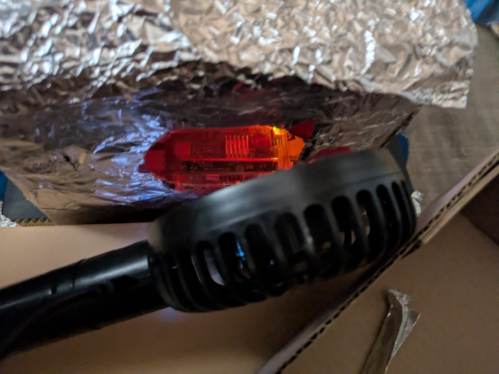
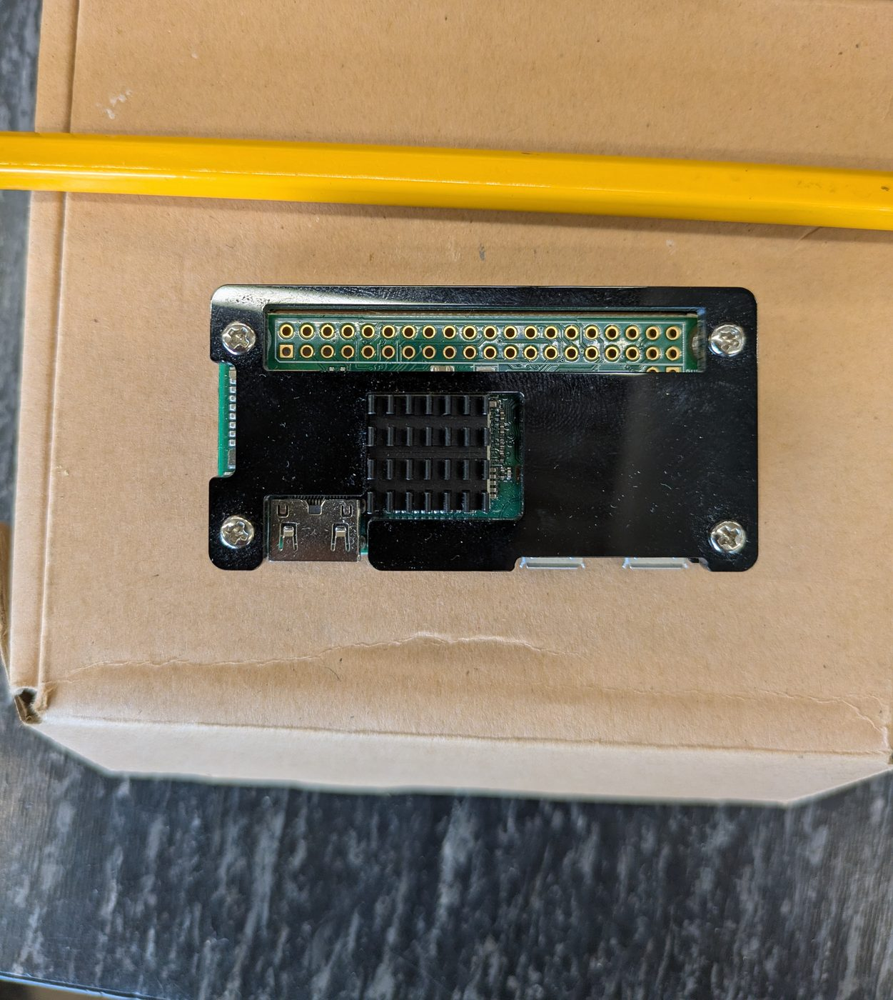
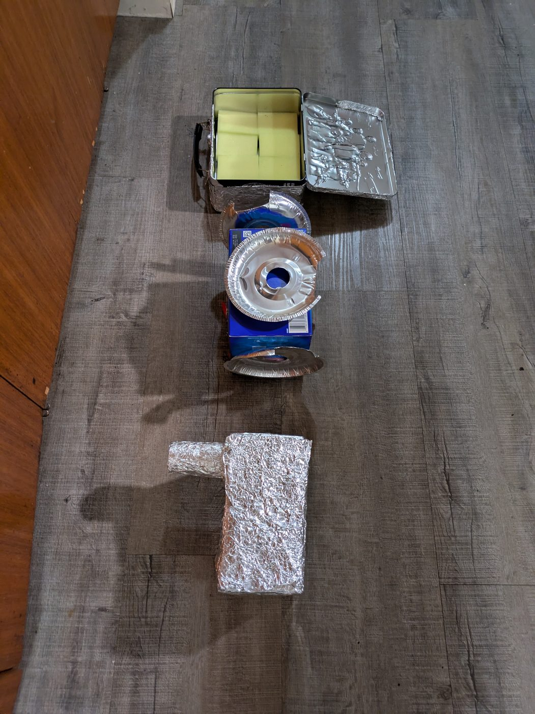

There is a measurement that normally needs a refrigerated lab and a very large budget. I found a way to take a version of it with a cheap single-board computer, a spare afternoon, and some kitchen foil. Build the kit, run one command, and read your own result off your own hardware.
I have a theory about what the result means, and this experiment is what I built to test it. You do not have to care about any of that. Either way, this is a free measurement tool. Test my theory if you want, or ignore it completely and just measure your own machine.
Every result that comes back gets published on this page. Including the ones that find nothing.
Your computer has a hardware source that produces raw physical noise. It is not a software random number generator. It is a piece of silicon doing something genuinely unpredictable, and the timing of how it responds is measurable.
This experiment times that response over many hours, and it times a software random number generator in the exact same loop as a control. Same processor, same clock, same temperature, same moment. One of those two things is expected to behave like pure randomness. The interesting question is whether the other one does.
The textbook answer is that this should be memoryless. Each measurement independent of the last, nothing carried forward, persistence sitting at 0.50. That is the number to have in your head, because it is what "nothing to see here" looks like.
I do not think that is what happens, and I have spent months measuring it to find out whether I am wrong. That is the honest state of it. I have a theory about why, it makes predictions that go well beyond a cheap computer on a kitchen floor, and I am writing it up properly rather than posting a thread about it. What I can do right now is hand you the instrument and let you take your own reading.
Budget somewhere around $60 to $100 if you are starting from nothing. Less if you already own a battery bank and a spare SD card, which most people do. None of it is specialist equipment. I built mine out of things that were already in the kitchen, and the shielding works because what it blocks is ordinary radio and vibration, not anything exotic.
The microwave must be unplugged at the wall before anything goes inside it, and it must never be switched on with the experiment in it. Not on a timer, not for a second, not to see what happens.
The microwave is being used as a metal box. That is the entire reason it is here. A microwave door is built to keep radio waves in, which means it also keeps them out, and that is worth about forty dollars of shielding for free. It is doing nothing else.
Running a microwave with electronics or metal inside will destroy the electronics, can damage or destroy the oven, and can start a fire. If you are not going to unplug it, use a steel toolbox or a biscuit tin instead. They work nearly as well and there is nothing to switch on.
Do not use the family microwave without asking. Do not put anything in there that you would be upset to lose.
Board prices swing hard depending on the model, the retailer, and what is in stock that week, so I am not going to pretend I can quote you a number that stays true. Shop around. I do not sell kits, I have no affiliate links, and I make nothing if you buy any of this.
I am not going to dress these up. This is a real setup on a real floor, photographed on a phone, and it is held together with foil and kitchen sponges. That is sort of the point. If it needed a clean room I could not have done it either.



[Placeholder: one-page printable build sheet.]
$ curl -sL https://fsmelogic.ca/lab/pi_lab.py -o pi_lab.py && python3 pi_lab.py
No dependencies to install. One file, standard library only. You can read the whole
thing before you run it, and you should.
Source: lab/pi_lab.py.
SHA-256 141574ea3fc02af1569c8dd664fd1f4bb71184f9373a17934ded61ffa65ee1fe
(checksum file).
The script analyses your data twice. Once as recorded, and once after shuffling your own measurements into a random order.
Shuffling destroys any memory in the sequence and changes nothing else. Same values, same spread, same hardware, same temperature history. So if your real run and your shuffled run come back the same, there was nothing there. If they come back different, the difference is in the ordering of your own data, and no amount of me talking can put it there or take it away.
You do not have to trust me. You have to trust a shuffle.
# FSME OPEN LAB - RESULT CARD pi_lab 1.0.0
Machine : aarch64 Linux
Model : Raspberry Pi Zero W Rev 1.1
Samples : 7200
Temperature : 41.2 C to 48.9 C over the run
Preflight : 4 of 4 checks passed
PERSIST SMOOTHING COMPRESSIBILITY
YOUR DATA 0.907 -0.158 0.398
SHUFFLED CONTROL 0.542 -1.086 1.038
SOFTWARE CHANNEL 0.568 -1.031 1.023
NOTHING-TO-SEE 0.50 -1.00 1.00
Card ID : 4f5f667bb61fb647
Three numbers. Persistence asks whether the past predicts the future. Smoothing asks how fast the variation disappears when you zoom out. Compressibility asks how much repeating structure is hiding in the order. The bottom row is what all three look like when there is nothing there. The layout above is the real output format, filled with example numbers.
The write-ups behind this are coming, in order, as they are finished. I would rather publish them properly than dump everything at once and argue about it in comments. When each one lands it goes in the newsroom.
Raspberry Pi 3 Model B. 5,400 measurements each, 90 minutes each, no shielding, no Faraday box, ethernet still connected. I ran it in the worst conditions I could, on purpose, because a result that only appears inside a tinfoil box is not much of a result.
| Run | Row | Persistence | Smoothing | Compressibility |
|---|---|---|---|---|
| 1 | Your data | 0.611 | -0.828 | 1.015 |
| 1 | Shuffled control | 0.530 | -1.003 | 1.024 |
| 1 | Software channel | 0.499 | -1.205 | 1.013 |
| 2 | Your data | 0.600 | -0.617 | 0.999 |
| 2 | Shuffled control | 0.522 | -0.935 | 1.036 |
| 2 | Software channel | 0.532 | -0.900 | 1.026 |
| Nothing to see here | 0.50 | -1.00 | 1.00 |
What I take from that, and what I do not. Persistence came back at 0.611 and 0.600 while the shuffled copies of the same data sat at 0.530 and 0.522 and the software channel sat at 0.499 and 0.532. The shuffle and the software control both landed where they should. Compressibility found nothing at all, in every row.
So one of three measures separated, twice, and the other two behaved. That is interesting. It is not a discovery. Two sessions on one machine on one afternoon is a hint, and I would want shielding, longer runs, and other people's hardware before I called it anything more than that. Which is the entire reason this page exists.
Card IDs 4f32275ff3759b3e and
eb1169e4bf63ef3b. The timestamps in the
filenames are wrong because the Pi had no network clock and thought it was June.
Flagging that so nobody thinks I am hiding a date.
No account, no email, no upload, no telemetry. The tool writes files on your machine and prints a card, and that is the end of it. I do not want your data and I have not built anywhere to put it.
That is not a policy I wrote for this page. None of my software phones home, including the things people pay for. If a tool has to call a server to work, then the server is the product and you are renting permission to use your own computer. I am not interested in building that.
If your run finds something, or finds nothing, and you want to tell someone, post it wherever you like. The card has an ID on it that matches your own data file, so you can prove it came from a real run. If enough people do that and it turns into something worth collecting, I will build a proper way to collect it, and it will still be optional.
The reason I built a cheap instrument is that I have spent years building tools that find the moment a system's structure changes, before it shows up in the numbers anyone is watching. If you want to see that working instead of reading about it, there is a second thing you can run, and it also takes one command.
This is a water treatment plant that doses chlorine based on sensor readings. It loads a third party module, the kind of code you might buy or have an AI write for you, and runs it inside a box that cannot do anything except arithmetic.
$ pip install stratum-lang
$ stratum --grant console,entropic,randomness,self_heal,concurrency secure_plant.st
Three things happen, and you can watch all of them:
That is the free version. It is not a trial and it is not crippled. It is the same detector, running on your machine, offline, with the source in front of you.
The free detector looks at each reading as it arrives. The paid one also looks backwards over the recent window, which is what catches an attacker who moves slowly on purpose. Here is the same poisoned stream scored by both. The number is how many of five planted attacks each one caught.
| Size of the nudge | Free | Paid |
|---|---|---|
| 0.3x the noise | 0 of 5 | 0 of 5 |
| 0.5x the noise | 0 of 5 | 2 of 5 |
| 1.0x the noise | 0 of 5 | 5 of 5 |
| 2.0x the noise | 2 of 5 | 5 of 5 |
| 5.0x the noise | 4 of 5 | 5 of 5 |
A nudge about the size of the background noise is invisible to the free detector and obvious to the paid one. That gap is exactly where a patient insider or a compromised device operates. The paid version also signs its findings and adds the reasoning layer. You can reproduce this table yourself; it ships with the paid package.
Most security software asks you to believe it. There is one part of this I do not ask you to believe, because a machine checked it. The rule is that code can only ever give away abilities, never grant itself new ones. That is proved with an SMT solver rather than tested: widening is not merely disallowed, it is unsatisfiable. The proof also checks that the rule is load bearing, by confirming that widening becomes expressible the moment you remove the gate.
That last part matters more than it sounds. A proof that passes because it is checking nothing is worse than no proof at all.
The language, free and open · What the paid versions do · Ask me something